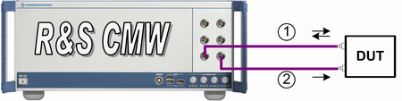

Test Setup for RX Diversity Scenarios
If internal fading is used, the test setup is the same as for the scenario BCCH and TCH/PDCH.
If external fader is used (e.g. R&S SMW200A), the test setup is the same as for scenarios with external fading.
The following figure illustrates which paths the RF signals use. Fader signal consists of fading superimposed on the original downlink signal.

Test setup using two connectors at MS side
1 = uplink plus the first downlink path with faded downlink signal
2 = the second downlink path